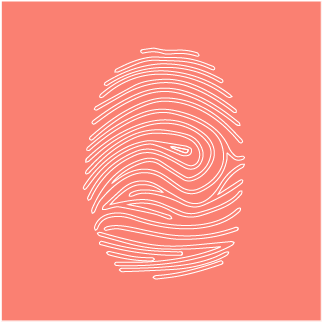
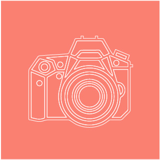
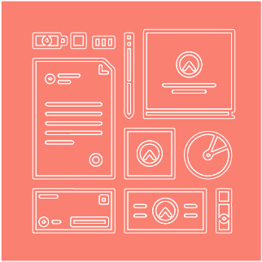

Dimension plastique
La dimension plastique est omniprésente dans l’ensemble de mon travail. j’apprécie travailler de manière manuelle en faisant appel à différentes technique telles quele collage, le fil à coudre par exemple.
Read More

Photographie
La photographie me permet d’aborder le monde avec une nouvelle vision, qui se dessine à travers le prisme de l’appareil photographique. C’est une captation d’images que l’on fige de manière éternel.
Read More

Identité Visuelle
L’identité visuelle et le packaging sont des domaines dans lesquels j’aime travailler. En effet, on a la possibilité d’allier à la fois le dessin et la mise en page avec des déclinaisons divers et variés.
Read More